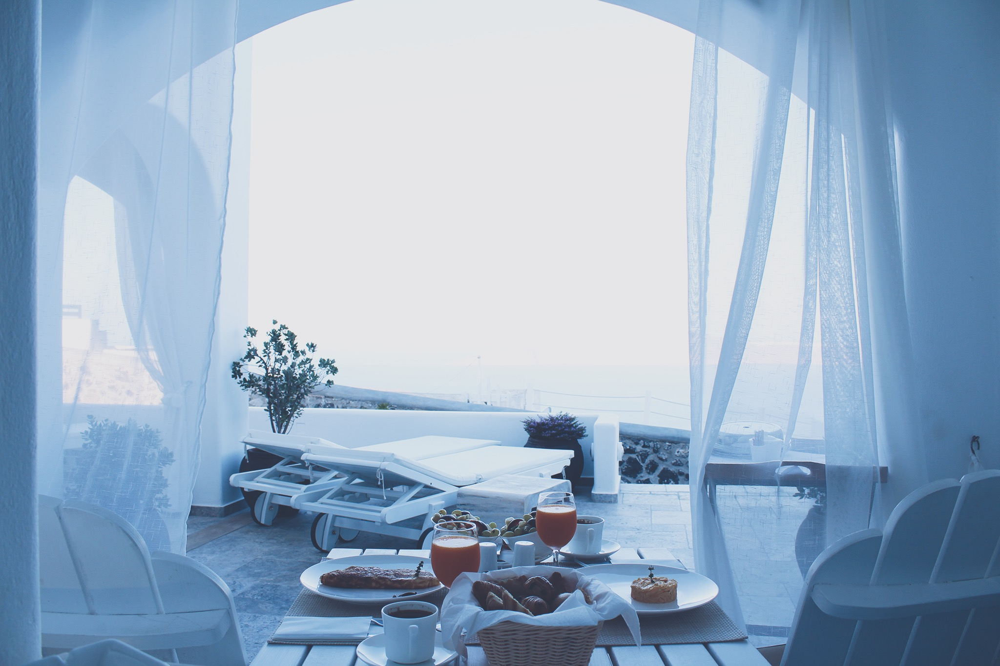

Everyday
Breakfast & Bedwarmth
世間様の言うクリスマスシーズンというのは所謂イルミネーションだったりプレゼントだったりケーキだったりを楽しむもので、俺だって昔は例外なくそうだった。いつの間にか全力で楽しみに待つ時代は終わって、その日は市民を守る日という意識になったのは仕方のないことか。そういうイベントごとを楽しみにしなくなったことをわざわざ悲しむほど子どもではないはずなのに、その年はどういうわけか違った。
ハロウィーン以降のイベントごとといえば、馬鹿どもがよく騒ぐ。警察の管轄だろとうんざりする暇もないほどに、酔っ払いを相手取ることが増える。それでいつにも増して無駄な疲労が蓄積される。「これのどこがヒーロー活動だ！」と悪態をつけばヘラ鳥は「えー？ でもこの程度を御しきれない大・爆・殺・神ダイナマイトではないでしょ？」と煽るので、まんまと乗せられて三倍は疲れた。それで、束の間の休憩場所に選んだとあるビルの裏口に続く薄暗い階段に腰掛けていると、待ち人は来て言った。
「え、爆豪くん、何してるの？」
「……おせーよ。これ食うぞ」
「ええ？」
戸惑いを隠せないといったふうだが、マフラーの下で僅かに緩んだのだろう口元に気づいて少しばかり安堵する。拒まれてはいない。それがわかっただけでも収穫だ。
「ン」
「なにこれ」
「ファミチキ」
「思いっきりローソンの袋なんだけど」
「ローソンのファミチキ」
「ふふ、じゃあ私はペプシでも買ってこようかな」
「炭酸飲まねえだろ」
「ジンジャーエールは好き」
「せめてコーラにしろや」
こいつとふざけあうのは出会ってからずっと毎回のことで、別にそれは元A組の奴らに対してそうするのと大きな違いはないはずだった。だけど。
「クリスマスなのに良かったの？」
「……ァにが」
「なんか、こうやって会うのとか、なんか」
「不都合あったらこねーだろ」
「それもそうか」
不都合なんてない。むしろ。
その先が言えるなら苦労することなどないのだが、何せ自分の気持ちとやらに気づいたのが今朝のことだ。そう簡単に何かを言えるわけもなかった。
はずなのに。
袋を受け取って隣に腰掛けた彼女が遠慮なくチキンに齧り付くのを見て、つい「会いたかった」と溢してしまった。
「え」
喧騒は遠く、ビルの隙間はうら寂しい。だから、誤魔化しようのないほどにはっきりと、きっと先の言葉は彼女の鼓膜を震わしたろう。
「爆豪くん、私に会いたかったの？ 今日？」
「……朝起きて」
「うん」
「なんかふとてめェに会いてえなと思った。から、会いにきた。悪いかよ」
「ぜんぜん、悪くない」
ビルの間を縫うように乾いた風が吹く。なのに、ひとつも寒いとは感じなかった。彼女の耳が赤いのも、多分同じ理由なのだろう。こちらを見ようともせず、どこか強張った表情でひたすらチキンを口に運んでいる。
「もうすぐ仕事納めで」
「ん」
「今日はクリスマスで」
「ん」
「私も、なんか、爆豪くんと会えたりしないかなあって思ってたから」
「……おう」
「嬉しい」
「ん」
「この後ご飯とか行ける？」
「パトロール中」
「サボりだ」
「時間作って会いにきた。意味わかんだろ」
「わかるけど、わからないことにしておく」
「あっそォ」
はあー、と長いため息を吐いて身体中から力が抜けていくのをそのままに、だらりと階段に背を預ければ、彼女もようやく息ができたとでも言うように小さくひとつ息を吐いた。
「クッソ疲れた」
「お疲れさま」
差し出された自分の分のチキンを受け取って一口頬張れば、「一口でか」と彼女は笑う。色気のないクリスマスというのもそう悪くない。なんとなく、そう思った。
数年前のクリスマス